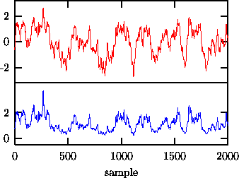
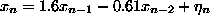
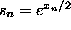
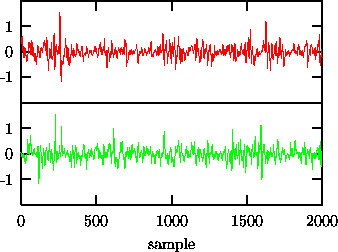
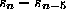
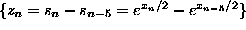
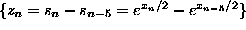
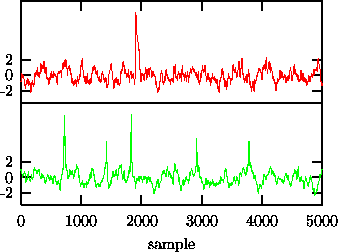

The catch is that nonlinear deterministic dynamical systems may produce irregular time evolution, or chaos, and the signals generated by such processes will be easily found to be nonlinear by statistical methods. But many authors have confused cause and effect in this logic: deterministic chaos does imply nonlinearity, but not vice versa. The confusion is partly due to the heavy use of methods inspired by chaos theory, leading to arguments like ``If the fractal dimension algorithm has power to detect nonlinearity, the data must have a fractal attractor!'' Let us give a very simple and commonplace example where such a reasoning would lead the wrong way.
One of the most powerful [13, 6, 11] indicators of nonlinearity in a time series is the change of statistical properties introduced by a reversal of the time direction: Linear stochastic processes are fully characterised by their power spectrum which does not contain any information on the direction of time. One of the simplest ways to measure time asymmetry is by taking the first differences of the series to some power, see Eq.(3). Despite its high discrimination power, also for many but not all dynamical nonlinearities, this statistic has not been very popular in recent studies, probably since it is rather unspecific about the nature of the nonlinearity. Let us illustrate this apparent flaw by an example where time reversal asymmetry is generated by the measurement process.

Figure: Upper panel: Output of the linear autoregressive process . Lower panel: the same after monotonic rescaling by .

Figure: Moving differences  of the sequence shown in Fig. 21 (upper), and a surrogate time series (lower). A formal test shows that the nonlinearity is significant at the 99% level.
Consider a signal generated by a second order autoregressive (AR(2)) process
. The sequence  consists of
independent Gaussian random numbers with a variance chosen such that the data
have unit variance. A typical output of 2000 samples is shown as the upper
panel in Fig. 21. Let the measurement be such that the data is
rescaled by the strictly monotonic function , The resulting
sequence (see the lower panel in Fig. 21) still satisfies the null
hypothesis formulated above. This is no longer the case if we take differences
of this signal, a linear operation that superficially seems harmless for a
``linear'' signal. Taking differences turns the up-down-asymmetry of the data
into a forward-backward asymmetry. As it has been pointed out by
Prichard,[50] the static nonlinearity and linear filtering are not
interchangeable with respect to the null hypothesis and the sequence
 must be considered nonlinear in
the sense that it violates the null hypothesis. Indeed, such a sequence (see
the upper panel in Fig. 22) is found to be nonlinear at the 99%
level of significance using the statistics given in Eq.(3), but
also using nonlinear prediction errors. (Note that the nature of the statistic
Eq.(3) requires a two-sided test.) A single surrogate series is
shown in the lower panel of Fig. 22. The tendency of the data to
raise slowly but to fall fast is removed in the linear surrogate, as it should.
consists of
independent Gaussian random numbers with a variance chosen such that the data
have unit variance. A typical output of 2000 samples is shown as the upper
panel in Fig. 21. Let the measurement be such that the data is
rescaled by the strictly monotonic function , The resulting
sequence (see the lower panel in Fig. 21) still satisfies the null
hypothesis formulated above. This is no longer the case if we take differences
of this signal, a linear operation that superficially seems harmless for a
``linear'' signal. Taking differences turns the up-down-asymmetry of the data
into a forward-backward asymmetry. As it has been pointed out by
Prichard,[50] the static nonlinearity and linear filtering are not
interchangeable with respect to the null hypothesis and the sequence
 must be considered nonlinear in
the sense that it violates the null hypothesis. Indeed, such a sequence (see
the upper panel in Fig. 22) is found to be nonlinear at the 99%
level of significance using the statistics given in Eq.(3), but
also using nonlinear prediction errors. (Note that the nature of the statistic
Eq.(3) requires a two-sided test.) A single surrogate series is
shown in the lower panel of Fig. 22. The tendency of the data to
raise slowly but to fall fast is removed in the linear surrogate, as it should.

Figure: A single spike is artificially introduced in an otherwise linear stochastic time sequence (upper). In the surrogate time series (lower), this leads to multiple short spikes. Although the surrogate data has the same frequency content and takes on the same set of values as the data, the remnants of the spike will lead to the detection of nonlinearity.